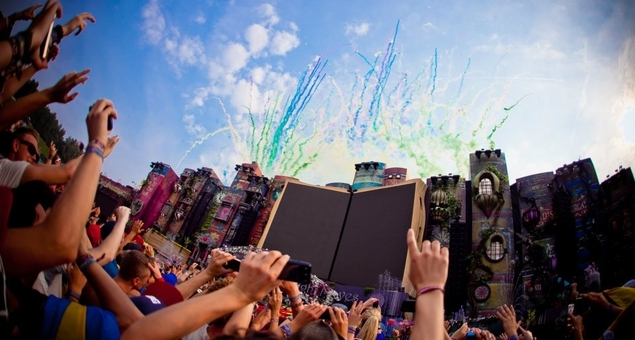
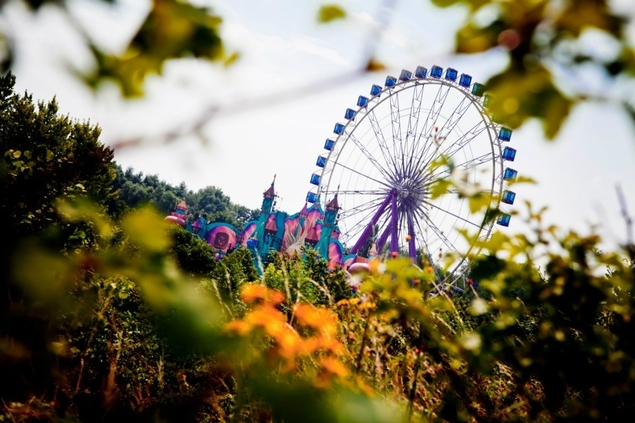
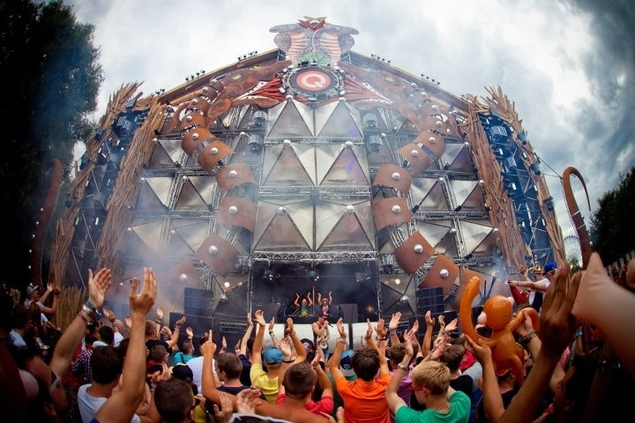
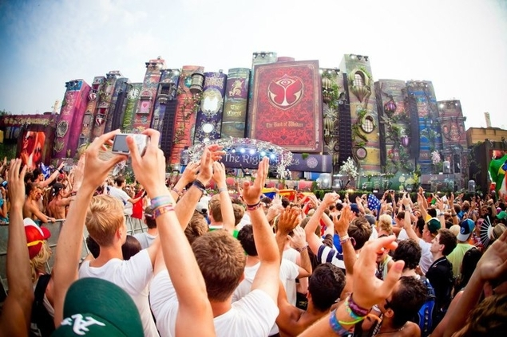
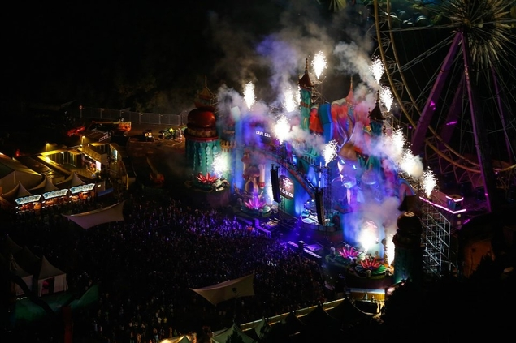
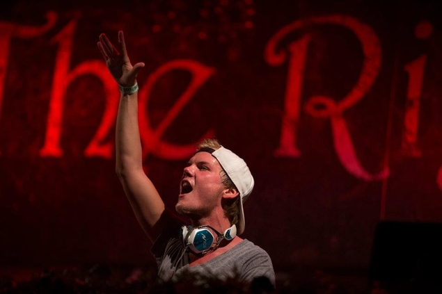

Tomorrowland 2012: The epic review
{kind=link}

Beyond any doubt, it was that 2011 ‘Aftermovie’ that sold the entire world on Belgium’s Tomorrowland. Dutch promoters ID&T had set the bar over the years via their Sensation parties worldwide, while the standard for the multi-genre day events had been their own Mysteryland festival in Amsterdam. At one point though, the company’s ever-growing Tomorrowland event overtook them all. Staged every year in the humble Belgian town of Boom, this year it expanded into a three-day event for the first time, hosting in excess of 180,000 people over its duration.
And most likely, you’re one of the 45+ million people who watched that ridiculously over-the-top ‘Aftermovie’ from the 2011 event on YouTube. Those sweeping aerial shots, that ecstatic crowd, those utterly insane looking stage designs, all that colour, music, emotion and excitement. It was enough to bring a tear to the eye of even the most grizzled, jaded dance fan. It was a masterstroke of marketing, firmly cementing the festival’s enigma in the eyes of partygoers. This year, inthemix embarked on an adventure into the heart of the De Schorre National Park, to see whether all the hype around Tomorrowland was really justified.
{kind=link}

FRIDAY
For a modest country of only 10 million people, Belgium certainly hosts an impressive number of massive festivals. As one local explains on Friday afternoon, Tomorrowland ain’t even the biggest, with events like Rock Werchter and Pukkelpop drawing even bigger crowds every year. And while the festival this year drew people from all corners of the globe, 60-percent of the tickets were still sold to Belgian residents in the initial presale. The country clearly likes to party.
While the glee levels are definitely on the rise throughout the afternoon, there is a sense on Friday the energy of the festival hadn’t quite settled yet. Attendees are suffering possibly from over-stimulation, the scope and scale of the party so grand that they don’t know what to do with themselves. If you’d had a peek at the timetable of acts playing over the weekend, and wondered how anyone would have decided how to spend their time, you’d have an idea how attendees felt every time they folded out that massive festival program; bewildered and overwhelmed enough to just fold it up again and put it back in their pocket.
The first stop is the Q-dance stage, flanked by entrance fences on either side made out of tall spiky wooden slats, in the fashion of a barricade in ancient Greece. The stage itself towers 20 metres high, with several long columns of spiky metal studs reaching skywards towards two intertwined cobras, rising out of the Q-dance logo – a slightly more modest version of the excess seen at the mainstage of the Defqon.1 festival every year.
{kind=link}

The De Schorre National Park’s infamous natural amphitheatre hosts the insanity of the ‘ID&T Mainstage’; and it’s hard to imagine a natural space that could have been any more perfectly formed by the gods to host such a massive dance event. Stretching out from the front of the stage was a big flat, grassy plain, the majority of which had been covered over by a massive wooden platform for punters to dance on; eventually the plain reaches the foot of a hill that circles the stage on both sides. It’s steep enough to ensure there are some hilarious slips, slides and tumbles down its steep and sometimes muddy incline over the course of the weekend (typically met with a roar of appreciation from the crowd).
For those wanting to avoid the slopes though, two viewing platforms are built on the far right and far left sides of the hill respectively, with immaculate views of the action below. It cannot be overstated how much the amphitheatre contributes to the magical vibe of the mainstage – the acoustics, the capacity, the layout, being able to look out from the front of the stage and see tens upon tens of thousands of people packed into the hills.
{kind=link}

And the design of the mainstage itself – oh golly. This year’s theme was based around the idea of spectacular fantasy bookshelf, a sprawling array of books stacked on top of each other at various angles, the stage dominated by a massive hardcover book standing upright in the middle, emblazoned with the Tomorrowland logo on the cover, and opening and closing on hinges to reveal a giant video screen on each of the open pages. Get up close to observe the little details, and on the spine of each book, you can see a tiny window that peeks inside a little house, the lights inside switching on and off after dark; implying they’re home to the kind of elves and gnomes taken straight from an Enid Blyton novel.
Techno and house fans are particularly well catered for on Friday, starting with the mighty Castle stage that is hosting the ‘Carl Cox & Friends’ arena. The first high-point of the afternoon comes when the rather unassuming presence of John Digweed is ushered onto a stage that is anything but unassuming. The ever-dependable ‘Diggers’ has shown he’s a craftsman versatile enough to play anything from a bristling warm-up set to balls-out techno, depending on the occasion. On Friday, he’s dropping a tough-edged selection of big-room progressive records that couldn’t have been better matched to the context.
Following immediately after, Marco Carola is more than enough to inspire thoughts of, “This is just too fucking good…”, banging out a set of stripped-back party techno that draws increasing levels of whoops from the crowd. Sets from Umek and the big man himself Carl Cox are still to come, and the setting is entertainment enough in itself; giant water fountains on either side of the DJ platform, confetti exploding over the crowd whenever a build-up leads into a massive drop, the grandiose Ferris Wheel spinning behind the stage, the eyes of the sun peering benevolently down upon the crowd as the sun begins to set. The ‘minor’ stages certainly aren’t being given short shrift in terms of production.
{kind=link}

For the trance fans, Above & Beyond’s ‘Group Therapy’ tent is definitely the best place to be on Friday (and the whole weekend, for that matter). By around 8pm a sweaty, heady, happy energy has settled over the dark confines of the tent, with Anjuna’s archetypal warm-up DJ Jaytech busting out with the kind of mid-tempo trance and house fusions that have defined his recent shift in direction. It’s booty-shakin’ euphoria that sets the tone for the even bigger dose of euphoria to come.
Above & Beyond themselves step up after 9pm, and their set is as perfectly tuned for a festival as you could wish for. They bring plenty of the expected uplifting moments, but with all of the dynamic excitement we’ve heard from their Anjunabeats label as of late. There’ll be a dash of energy throw in, then followed up immediately with a slamming bassline. The bottom-heavy grind of Norin & Rad’s Pistol Whip nearly shakes the tent to the ground, while the set’s explosive peak comes with the progressive, techy grooves that lead into the melodic explosion of Audien’s Eventide. What’s heard in the ‘Group Therapy’ tent stands head and shoulders above any other trance heard at Tomorrowland over the weekend.
Elsewhere though, house and techno fans are given even more of a ridiculous range of options to choose from. The pier stage on the river is hosting a drool-worthy line-up that includes Deetron, Ame, Solomun and Martyn, while the ‘Eastern Mysticism’ themed stage features sets from the likes of Maceo Plex, Guy Gerber and Jamie Jones. An appearance from Joris Voorn warrants a visit after 10pm, and he’s holding back on the techno tonight for a set mostly focused on inviting house grooves.
However, the journey to reach Voorn’s dancefloor proves the most memorable. Strolling over one of the river’s wooden crossings, little bursts of flame are shooting up from either side of the walkway, and to your left there’s one of the grandest sights to be seen during the whole weekend. Far across the water you can see the Ferris Wheel of the ‘Castle Stage’, lit up with colourful lights and surrounded by smoke, lasers shooting out into the sky from every angle. It looks amazing enough to make you stop, stare and gape.
If anything is going to top that, it would be a visit to the mainstage for the final two hours of the day, to witness things at full force after the sun has gone down. Weighing a hefty 180 tonnes, it’s also apparently the heaviest stage ever been built for a dance festival. It looks cool enough during the day, but these events truly come into their own when the sun goes down, the lights turn on and the lasers are ignited.
Standing all the way at the back of the amphitheatre’s incline is one way to soak all that excess in. By this stage, the length of the stage just looks absolutely colossal, and the crowd is being bombarded by a combination of intense flashing lights and flickering strobes. Smoke is billowing from the bottom of the stage, confetti and streamers exploding from above the stage, flames reaching into the sky, fireworks going off overhead, lasers lighting up the tens of thousands gathered with a glorious green glow.
{kind=link}

Avicii is playing the peaktime slot tonight, and the Swedish golden boy (and forthcoming Stereosonic headliner) has been the surprise mainstage class act during this year’s European festival season. There’s little doubt this is house music for the masses (or ‘trouse’, if you will), but he’s giving the likes of Tiesto a run for his money in terms of the class in which he’s delivering it. Tonight he proves himself a pro when it comes to delivering tightly-constructed sets for ridiculously-sized crowds, and by the time he inevitably winds his set up with Levels, the crowd is exploding in fits of unrestrained joy. “Come on and dance, ya jerk!”, I’m instructed by my friend next to me. No one would have been immune at that point in time.
Epic levels of idiocy are expected from the Bloody Beetroots in the evening’s closing DJ set, and the duo gloriously embody the overblown, opulent spectacle of the mainstage. While you’re gaping at the sights, the Beetroots provide a soundtrack that stretches even the boundaries of what’s referred to as “maximal”. Everything is thrown in there – including the kitchen sink, a buzzsaw bassline, a cavalcade of screeching white noise, several ‘wub wub’ breakdowns, an extra heavy dose of silliness as well as two angry, masked Italians waving their fists in the air.
By the time the evening’s end is signalled at 1am by one of ID&T’s familiar dramatic voiceovers, you’re reassured by the fact you’ve got two more days of this wonderful madness to go.
SATURDAY
You know you’re at a different kind of party when your meeting point is the fifth giant mushroom. Like all the other giant mushrooms perched on top of stands, it’s blowing hundreds and hundreds of bubbles into the air. Of course.
Things might have gotten off to a leisurely start on Friday, but by Saturday the joy levels are red-lining in a fashion that not even a slickly edited ‘after movie’ could capture. By Saturday there’s a sense that everyone is floating around on one of the clouds depicted on the Tomorrowland artwork. Let the happiness flow freely. This is dance music nirvana.
Helping maintain this illusion are the two guys dressed as cyberpunk tin men, complete with spiky hats spitting out flames. Each is pushing a shopping trolley along the river – containing bubble-making machines, generating thousands upon thousands of bubbles in the air around them. They’re like the Tomorrowland pied pipers, with hordes of punters following them along the riverbank, dancing around them in circles and jumping up the air.
The two Happy Happy Bubble Boys are loitering next to the pier stage, which yesterday hosted Ame, Solomun and the like. Today, though, it’s musically fairly non-descript; house tunes that are about as cheesy as they come, but you just can’t stop yourself from getting sucked up in the moment. You’re standing on the planks of a pier that’s been constructed for the sole purpose of allowing people yet another place to party, and the DJ is throwing down Temper Trap and Gotye remixes, vocal mash-ups that couldn’t be any more obvious – and he even chucks in Darude’s prototype cheeseball anthem Sandstorm from back in 1999. It’s a bizarre example of dance music coming full circle, all of a sudden sounds like something Afrojack would play. The crowd is dancing around with wild abandonment, giddy with delight. And it is just beautiful.
One of the wildly contrasting choices you’ve got for the day, on differing sides of the festival grounds (and the musical spectrum), is Sven Vath’s ‘Cocoon Heroes’ arena and Paul van Dyk’s ‘Evolution’ arena. Vath and co. have set up shop at the beautiful ‘Eastern Mysticism’ stage, the solemn Buddhas at the front offering their expressed approval of the wild sense of looseness and hedonism that seems to accompany the Cocoon brand wherever it travels.
With Papa Sven set to play the closing set at 11pm, it’s Seth Troxler who steers it from 4pm as the energy of the arena really begins to settle in. The crowd is well in the zone, having hurled their inhibitions over to who knows where. It feels like a proper techno party with all the trimmings, rather than an extra stage tacked onto a big-budget festival. Tomorrowland really does feel authentic at every step.
PvD has set up his ‘Evolution’ arena at the colour and grandeur of the ‘Castle Stage’, and he’s solicited the services of Ferry Corsten to play the mid afternoon set. The Dutchman is playing a set that’s somewhat draws on the trance-house fusions dominating the sets of the mainstage performers; though pleasingly, with a much tougher edge, encapsulated with his 2011 anthem Feel It which gets an airing here.
Successive performances from Porter Robinson and Marco V nod to PvD’s iron-fisted insistence on musical diversity, but when the big man himself steps up at 9pm, it’s a smashing set that luckily sees him living up to his lofty musical ideals. Packed with bubbling build-ups and melody, there’s also plenty of harder-edged techno. It’s the rushing speed in which he goes about it that brings much of the impact; it’s plenty more dynamic than what’s generally heard from ‘trance’ DJs. As the sun begins to set, the Ferris Wheel looks even grander, and lasers are unleashed upon the crowd. PvD’s live piano twinkles over his recent Arty collaboration The Ocean seal what’s one of the festival’s real crowd-pleasing sets.
Meanwhile, the insane energy at the mainstage doesn’t stop throbbing for the entire day. Holland’s Chuckie is dropping a set of predictable mainstage house bombs after 5pm, delivered with his equally predictable showmanship and technical flair, and at one point he asks the crowd to wave their respective nation’s flags in the air – looking down the hill towards the stage, that’s a damn lot of flags from a damn lot of different countries being waved around.
Martin Solveig takes control at 7pm as the energy is really beginning to simmer. It’s not quite sundown yet, but those water sprays on either side of the stage of the stage seem to be reaching higher and higher, and Solveig delivers an anthem-heavy set that’s unpredictable enough to show he’s still capable of doing things a little differently. His own Ready To Go is whipped out early on, while that guitar riff in Calvin Harris’s Feel So Close sounds like pure magic ringing out across that amphitheater. Niggas In Paris gets an airing, and then all of a sudden we’re throwing our hands in the air to the glorious chants of Eric Prydz’s Leja.
It’s Skrillex’s set after sunset that matches maximal silliness the Bloody Beetroots had brought the day before. For someone who’s often accused of being just about ‘the drop’, there’s definitely a lot of crazy high-end noise in there, and it’s fairly suitably matched to the mayhem of lights and lasers again reigning down on the crowd, the flame-throwers spewing fire into the air. That stage doesn’t look any less extravagant on the second evening, and the crowd energy is definitely rocking.
The sprawling amphitheatre is particularly rammed with punters tonight, tens upon thousands spread out all the way to the very top of the hill, and there’s a pretty obvious reason for it – the Swedish House Mafia are about to come on. The giant book in the centre of the stage has opened to reveal one of the recurring visual motifs – the pages of the book, though with an eerie white face pushing out through the left page, looking out on the crowd, blinking and muttering something mysterious and indecipherable. Creepy yet awesome.
The Swedes get the insane response from the crowd that’s expected, the three of them wearing matching black T-shirts, their hands perpetually held in the air. There’s been about a billion oversized novelty glowsticks handed out to the crowd, and they’re in the palm of the Mafia’s hand. They even try that ol’ ‘Jack In The Box’ trick at one point – get the crowd to all crouch on the ground, and then jump up in the air simultaneously (look out for it in the 2012 ‘Aftermovie’). Axwell charms the crowd like a true gentleman. “You are our heroes. You are our legends. Thank you!”
Axwell, Angello and Ingrosso tapped into something big, big, big when they turned the Swedish House Mafia into a bonafide big-money brand, and yet again, you can’t argue with the elated energy of tens of thousands of people. Saturday night is the glorious peak of the festival.
SUNDAY
It’s a late start to the day for many, and by this stage, it’s clear the excesses of the past two days have collectively caught up with everyone a little – even simply in terms of how much ecstatic energy they’ve expelled over the weekend, so they have an excuse for feeling a little burnt-out.
The Tranceaddict.com tent in the far west end of the festival grounds features a fairly impressive lineup of mostly next-gen talent, and it’s a pleasant place to spend the afternoon, the wide setup of the tent meaning a lot of sunlight is allowed to stream in. Dutch relative newcomers W&W prove the favourites of the day, with a punchy set that’s heavy on the driving basslines; on a whole though, many of the performances suffered from a heavy dose of blandness, reflective of the ‘safe’ territory much of the trance scene has steered into lately.
Elsewhere, Sunday proves to be nothing less than an utter paradise for techno lovers, showcased in its different guises at no less than three different arenas. Josh Wink is in control at the ‘Eastern Mysticism’ stage with the ‘Ovum Records’ arena, the setting proving a boon for those wanting a chance to relax in the sun. The ridiculously awesome combination of DJ Sneak, Derrick Carter and Mark Farina provide the jackin’ grooves in the early afternoon, earning a loved-up but suitably rancho-relaxo response from the crowd, while Shlomi Aber steps up next to take things in a slightly more techno direction, warming things up a little for for Steve Bug and Josh Wink himself later in the day. In a perfect world, you’d be given the chance to go back and experience the arena all over again in all its uninterrupted glory.
Over at the two purple tents in the centre of the festival, just across from the bombastic sounds of the ‘Dirty Dutch’ arena you’ll find Richie Hawtin and his cohorts hosting an ‘ENTER’ arena. The dark and sweaty vibe is consistent with the teeth-clenched intensity of Hawtin’s parties and DJ sets, and like yesterday’s ‘Cocoon Heroes’ arena, the vibe here is of a proper techno party.
Insanely though, it doesn’t even end there because over at the ‘Castle Stage’, you have the arena hosted by the mighty Dave Clarke. If yesterday’s ‘Evolution’ arena seemed a little more in step with the bright, excessively beautiful stage design, then today it’s gone back to being completely out of step – in a way that is oh-so-right. You’re staring at this absurdly grand and colorful stage design, with a great fiery sun watching your every move and a Ferris Wheel as a backdrop. Meanwhile, Frankfurt heavy Chris Liebing is smashing the shit out of things, not holding back in the slightest, or offering any consideration for the absurdly colorful nature of the stage he’s playing on. It’s a thing of true beauty. Dave Clarke steps up to unleash his own brand of fury just as the sun is going down, and the lasers are unleashed over the crowd once again.
David Guetta is the main drawcard at the mainstage tonight, and love him or hate him, it’s like he was born to play Tomorrowland amphitheatre at its bubbling peak. Anyone who watched last year’s ‘Aftermovie’ will certainly remember the moment where he stages his own giddy version of the ‘Mexican Wave’, and tonight he brings a similar amount of beaming, wide-smiles and energy, and it’s clear the crowd have just a little bit of energy left to draw on for the last few hours of the festival.
At around 10pm, a particularly spectacular set of fireworks go off over the stage; it’s not like they’ve been in short supply in the past few days, but these ones really are enough to make you tilt your head back in giddy-eyed wonder.
HOME AGAIN…
At one stage on the first day, a shirtless punter was seen wandering around the mainstage with a sign raised above his head, posing the question: “Is there life after Tomorrowland?” Indeed, after three days of that, going back to everyday life feels more than a little strange. What happened to all the colour, the excitement, the Ferris Wheels? The candy cane arches on every bridge you walk over? The giant mushrooms emitting bubbles into the air? Where happened to two guys pushing around the bubble-making machines?
The biggest achievements of Tomorowland are simultaneously the ridiculous level of spectacle, the incredible detail in the set-up that creates a cohesive fantasy world at every step, as well as being the ultimate salute to those who enjoy a genuine spectrum of different dance music. There’s something special about the fact that Dave Clarke, David Guetta and Josh Wink can all be playing at the same time, each with a set-up that’s equally as spectacular in its own way, and that these worlds can all exist alongside each other.
Most would struggle to even describe the dizzy journey that they went on over the three days. A week later, and you’re still dreaming about Tomorrowland. A return down the rabbit hole to Boom’s De Schorre National Park in July 2013? Yes please.